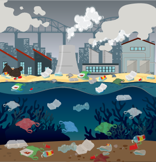

Sabias que el 80% de las aguas residuales del mundo se vierten sin tratar a los ríos, lagos y océanos.

Imagen de brgfx en Freepik
Sabias que la contaminación del agua es responsable de la muerte de millones de personas cada año.